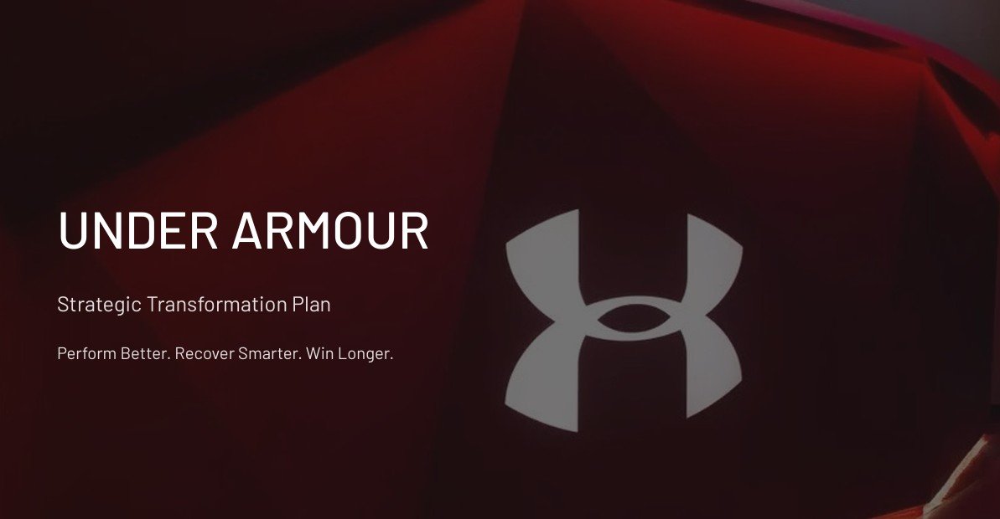

Under Armour-Strategic Transformation & Analytics Vision
Built a transformation plan centered on three pillars—personalized performance insights, sustainable manufacturing (DfM), and smart training ecosystems—to evolve Under Armour into a data-driven athlete platform.
- Defined a roadmap from data foundation → sustainable manufacturing shift → smart performance launch → global athlete network expansion.
- Identified key risks (data integration complexity, supply volatility, adoption of smart tech) and mitigation via phased rollout, diversified sourcing, and athlete feedback cohorts.